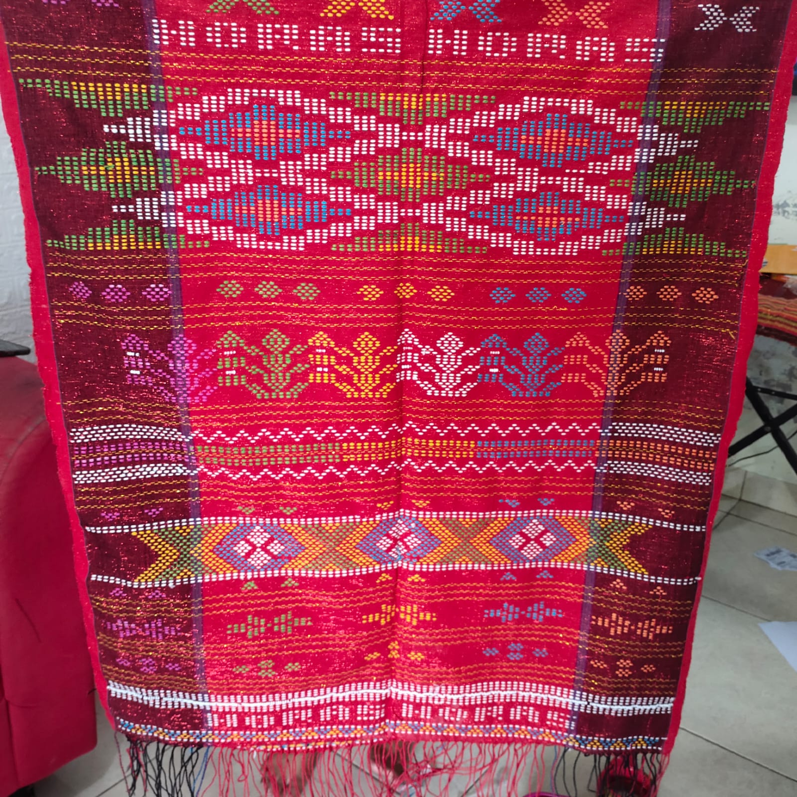
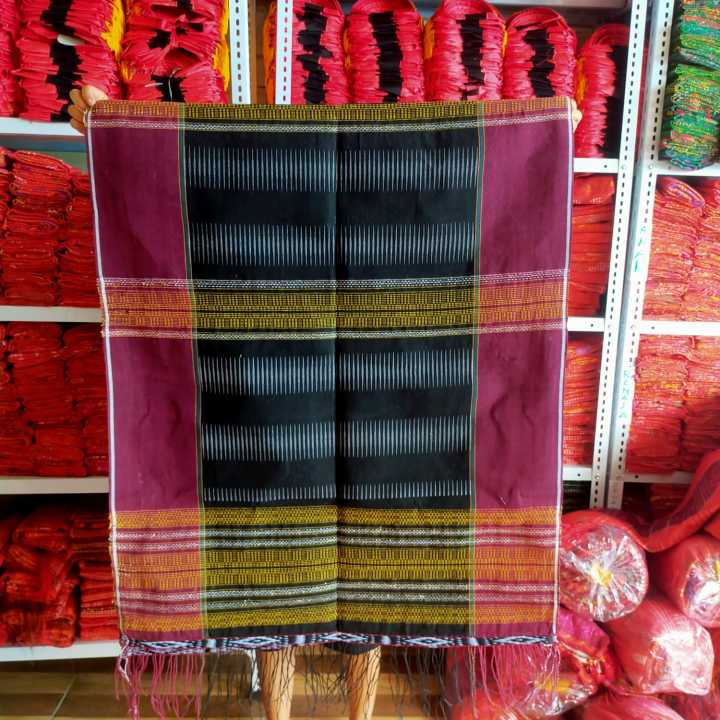
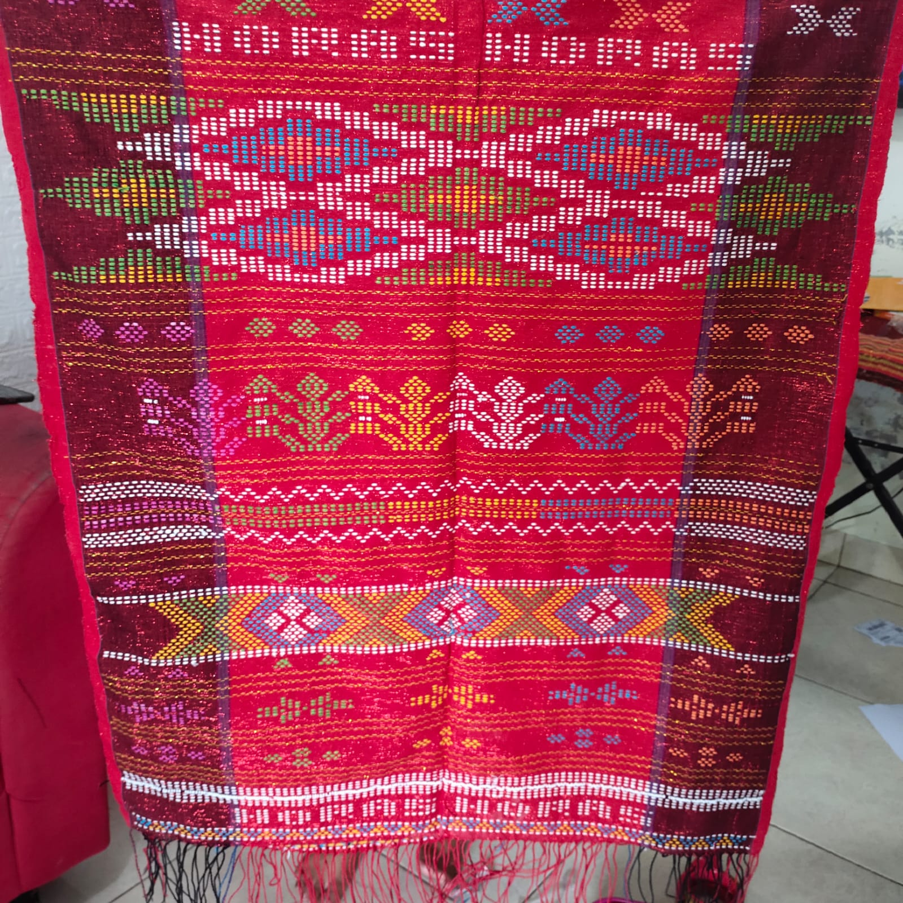
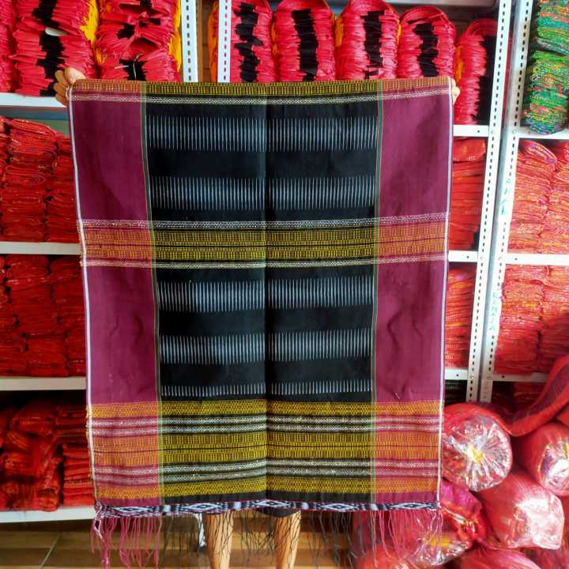

+2
Ulos Ragidup (Tenun Tangan)
Rp 2.500.000
Deskripsi Produk
Ulos Ragidup asli ditenun tangan (Partonun) dari Sanggar Sinta di Tapanuli Utara. Dibuat dengan benang berkualitas tinggi dan pewarna alam.
- Motif: Ragidup
- Ukuran: 220 cm x 90 cm
- Bahan: Benang katun premium
- Proses: 1-2 Bulan Pengerjaan